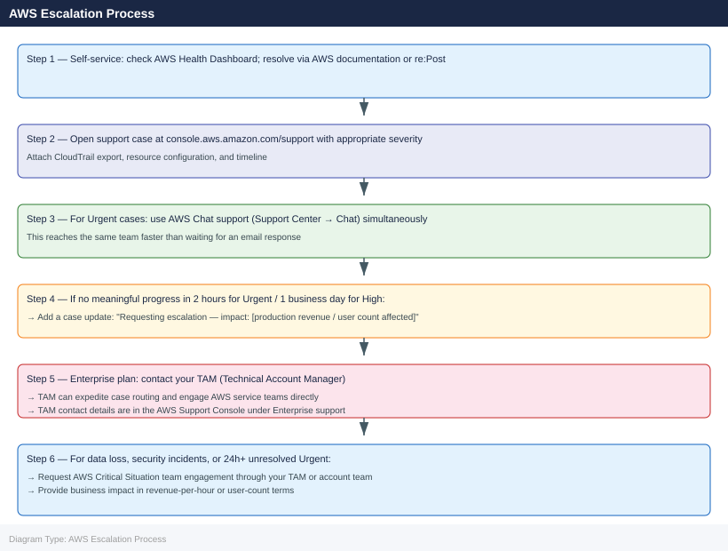

AWS — Escalation¶
Before you begin¶
- Access: AWS account with Support plan (Business or Enterprise); IAM permissions to create support cases (
support:CreateCase) - Gather first: affected resource ARNs, account ID, region, approximate start time, and any error messages or codes
- Status check: check
health.aws.amazon.comandstatus.aws.amazon.combefore escalating — many failures are caused by regional AWS incidents - Support plan: Developer plan does not include production-level SLAs; Business or Enterprise required for < 1 hour response
- Logging: enable CloudTrail if not already enabled; CloudWatch Logs agent on EC2 instances before reproducing issues
Severity Levels (AWS Support Case)¶
| Severity | Definition | Response SLA by Plan |
|---|---|---|
| Urgent | Production system completely down; no workaround | Business: 1h · Enterprise On-Ramp: 30m · Enterprise: 15m |
| High | Significant business impact; production impaired; workaround available | Business: 4h · Enterprise On-Ramp: 4h · Enterprise: 1h |
| Normal | Non-critical function impaired; development environment affected | Business: 12h · Enterprise: 4h |
| Low | General guidance; feature request; billing question | Business: 24h · Enterprise: 24h |
Pre-Escalation Triage Checklist¶
| Check | Command | Expected |
|---|---|---|
| AWS Health events | aws health describe-events --filter '{"regions":["<region>"]}' |
No active events for affected service |
| EC2 instance status | aws ec2 describe-instance-status --instance-ids <id> |
"Status": "ok" on both system and instance |
| Service quota not reached | aws service-quotas list-service-quotas --service-code ec2 |
Used < quota for affected resource type |
| IAM permissions valid | aws iam simulate-principal-policy --policy-source-arn <role-arn> --action-names <action> |
EvalDecision: allowed |
| CloudTrail has events | aws cloudtrail lookup-events --lookup-attributes AttributeKey=EventName,AttributeValue=<FailingAction> |
Recent events visible |
| VPC flow logs for network issues | Enable via aws ec2 create-flow-logs |
Flow logs present in CloudWatch |
| RDS event subscriptions | aws rds describe-events --source-type db-instance --source-identifier <id> |
Check for error events |
Step-by-Step Data Collection¶
1. Collect account and region context¶
# Get current account ID and caller identity
aws sts get-caller-identity
# Set the region for all subsequent commands
export AWS_REGION=<your-region>
export ACCOUNT_ID=$(aws sts get-caller-identity --query Account --output text)
{
"UserId": "AIDAI45Q7D5EXAMPLE",
"Account": "123456789012",
"Arn": "arn:aws:iam::123456789012:user/admin-user"
}
(no output — command completes silently)
(no output — command completes silently)
Common errors
| Error | Fix |
|---|---|
Unable to locate credentials |
Configure AWS credentials using aws configure or set AWS_ACCESS_KEY_ID and AWS_SECRET_ACCESS_KEY environment variables. |
An error occurred (UnauthorizedOperation) when calling the GetCallerIdentity operation: User: arn:aws:iam::123456789012:user/restricted-user is not authorized to perform: sts:GetCallerIdentity |
Add the sts:GetCallerIdentity permission to the IAM user's policy. |
2. Collect CloudTrail events for the failing action¶
# Find API errors in the last 4 hours for a specific service
aws cloudtrail lookup-events \
--lookup-attributes AttributeKey=EventSource,AttributeValue=ec2.amazonaws.com \
--start-time $(date -u -d '4 hours ago' +%FT%TZ) \
--query 'Events[?ErrorCode!=`null`].{Time:EventTime,User:Username,Action:EventName,Error:ErrorCode,Message:CloudTrailEvent}' \
--output json > /tmp/cloudtrail-errors.json
# For a specific resource (e.g., instance, S3 bucket)
aws cloudtrail lookup-events \
--lookup-attributes AttributeKey=ResourceName,AttributeValue=<resource-id-or-arn> \
--start-time $(date -u -d '2 hours ago' +%FT%TZ) \
--output json > /tmp/cloudtrail-resource.json
{
"Events": [
{
"Time": "2024-01-15T14:32:18Z",
"User": "arn:aws:iam::123456789012:user/jenkins-deploy",
"Action": "RunInstances",
"Error": "InsufficientInstanceCapacity",
"Message": "{\"eventVersion\":\"1.08\",\"eventSource\":\"ec2.amazonaws.com\",\"eventName\":\"RunInstances\",\"errorCode\":\"InsufficientInstanceCapacity\"}"
},
{
"Time": "2024-01-15T13:47:52Z",
"User": "arn:aws:iam::123456789012:user/ops-team",
"Action": "AuthorizeSecurityGroupIngress",
"Error": "InvalidGroup.NotFound",
"Message": "{\"eventVersion\":\"1.08\",\"eventSource\":\"ec2.amazonaws.com\",\"eventName\":\"AuthorizeSecurityGroupIngress\",\"errorCode\":\"InvalidGroup.NotFound\"}"
},
{
"Time": "2024-01-15T12:15:33Z",
"User": "arn:aws:iam::123456789012:role/lambda-execution-role",
"Action": "TerminateInstances",
"Error": "UnauthorizedOperation",
"Message": "{\"eventVersion\":\"1.08\",\"eventSource\":\"ec2.amazonaws.com\",\"eventName\":\"TerminateInstances\",\"errorCode\":\"UnauthorizedOperation\"}"
}
],
"ResponseMetadata": {
"RequestId": "a1b2c3d4-e5f6-7890-abcd-ef1234567890",
"HTTPStatusCode": 200
}
}
Common errors
| Error | Fix |
|---|---|
An error occurred (InvalidStartTime) when calling the LookupEvents operation: The start time is invalid. |
Ensure the date command produces valid ISO 8601 format; test with date -u -d '4 hours ago' +%FT%TZ to verify output. |
An error occurred (AccessDenied) when calling the LookupEvents operation: User is not authorized to perform: cloudtrail:LookupEvents |
Add cloudtrail:LookupEvents permission to the IAM user/role executing the command. |
jq: error (at <stdin>:1): Cannot index string with string "Time" |
The CloudTrailEvent field contains a JSON string, not an object; parse it with | fromjson in jq or use --output text instead of json. |
3. Collect resource-specific diagnostics¶
# EC2: instance status and recent logs
aws ec2 describe-instance-status --instance-ids <instance-id> --output json
aws ec2 get-console-output --instance-id <instance-id> --output text > /tmp/console-output.txt
aws ec2 describe-instances --instance-ids <instance-id> \
--query 'Reservations[].Instances[].[InstanceId,InstanceType,State.Name,PrivateIpAddress,SubnetId,VpcId,IamInstanceProfile.Arn]' \
--output table
# RDS: events and parameter groups
aws rds describe-events --source-type db-instance --source-identifier <db-id> --duration 240
aws rds describe-db-instances --db-instance-identifier <db-id> --output json
# S3: bucket policy and ACL (for access denied errors)
aws s3api get-bucket-policy --bucket <bucket-name> 2>/dev/null || echo "No bucket policy"
aws s3api get-bucket-acl --bucket <bucket-name>
aws s3api get-bucket-versioning --bucket <bucket-name>
# IAM: simulate policy for a specific action
aws iam simulate-principal-policy \
--policy-source-arn arn:aws:iam::${ACCOUNT_ID}:role/<role-name> \
--action-names s3:GetObject \
--resource-arns arn:aws:s3:::<bucket-name>/* \
--output json
{
"InstanceStatuses": [
{
"InstanceId": "i-0a7f3c9e2b1d4f5a6",
"InstanceState": {
"Code": 16,
"Name": "running"
},
"SystemStatus": {
"Status": "ok",
"Details": []
},
"InstanceStatus": {
"Status": "ok",
"Details": []
}
}
]
}
Saving console output to /tmp/console-output.txt
|-----------------------|-----------------|---------|------------------|----------|----------|---------------------------------------------|
| InstanceId | InstanceType | State | PrivateIpAddress | SubnetId | VpcId | IamInstanceProfile.Arn |
|-----------------------|-----------------|---------|------------------|----------|----------|---------------------------------------------|
| i-0a7f3c9e2b1d4f5a6 | t3.medium | running | 10.42.15.87 | subnet-8 | vpc-4a2b | arn:aws:iam::123456789012:instance-profile |
|-----------------------|-----------------|---------|------------------|----------|----------|---------------------------------------------|
{
"Events": [
{
"SourceIdentifier": "prod-db-01",
"SourceType": "db-instance",
"Message": "DB instance created",
"EventCategories": ["creation"],
"Date": "2024-01-15T09:32:14.000Z"
},
{
"SourceIdentifier": "prod-db-01",
"SourceType": "db-instance",
"Message": "DB instance restarted",
"EventCategories": ["availability"],
"Date": "2024-01-14T14:22:08.000Z"
}
]
}
No bucket policy
{
"Owner": {
"DisplayName": "account-owner",
"ID": "a1b2c3d4e5f6g7h8i9j0k1l2m3n4o5p6"
},
"Grants": [
{
"Grantee": {
"Type": "CanonicalUser",
"ID": "a1b2c3d4e5f6g7h8i9j0k1l2m3n4o5p6"
},
"Permission": "FULL_CONTROL"
}
]
}
{
"Status": "BUCKET_NOT_VERSIONED"
}
{
"EvaluationResults": [
{
"EvalActionName": "s3:GetObject",
"EvalResourceName": "arn:aws:s3:::my-bucket/*",
"EvalDecision": "allowed",
"EvalDecisionDetails": {}
}
],
"IsTruncated": false
}
Common errors
| Error | Fix |
|---|---|
An error occurred (InvalidInstanceID.NotFound) when calling the DescribeInstanceStatus operation: The instance ID '<instance-id>' does not exist |
Verify the instance ID is correct and exists in the current AWS region; check `aws |
4. Collect CloudWatch metrics and logs¶
# Get CPU and network metrics for an EC2 instance
aws cloudwatch get-metric-statistics \
--namespace AWS/EC2 \
--metric-name CPUUtilization \
--dimensions Name=InstanceId,Value=<instance-id> \
--start-time $(date -u -d '2 hours ago' +%FT%TZ) \
--end-time $(date -u +%FT%TZ) \
--period 300 \
--statistics Average \
--output table
# Get recent application log errors from CloudWatch
aws logs filter-log-events \
--log-group-name /var/log/app \
--start-time $(( $(date -u +%s) - 7200 ))000 \
--filter-pattern "ERROR" \
--output json > /tmp/cloudwatch-errors.json
-----------------------------------------
| GetMetricStatistics |
+----------+----------+----------+--------+
| Timestamp | Average | Unit |
+----------+----------+----------+--------+
| 2024-01-15T14:00:00Z | 45.2 | Percent |
| 2024-01-15T14:05:00Z | 48.7 | Percent |
| 2024-01-15T14:10:00Z | 52.1 | Percent |
| 2024-01-15T14:15:00Z | 41.9 | Percent |
| 2024-01-15T14:20:00Z | 39.4 | Percent |
+----------+----------+----------+--------+
{
"events": [
{
"logStreamName": "app-server-1",
"timestamp": 1705329456000,
"message": "ERROR: Database connection timeout after 30s"
},
{
"logStreamName": "app-server-2",
"timestamp": 1705329512000,
"message": "ERROR: Failed to authenticate with IAM role"
},
{
"logStreamName": "app-server-1",
"timestamp": 1705329678000,
"message": "ERROR: Memory allocation failed, heap size exceeded"
}
],
"searchedLogStreams": 3
}
Common errors
| Error | Fix |
|---|---|
An error occurred (InvalidParameterValue) when calling the GetMetricStatistics operation: The parameter StartTime is invalid. |
Ensure the instance ID is valid and replace <instance-id> with an actual EC2 instance ID (e.g., i-0a1b2c3d4e5f6g7h8). |
ResourceNotFoundException: The specified log group does not exist. |
Verify the log group name exists by running aws logs describe-log-groups | grep /var/log/app and use the correct group name. |
An error occurred (AccessDenied) when calling the GetMetricStatistics operation: User is not authorized to perform: cloudwatch:GetMetricStatistics |
Add cloudwatch:GetMetricStatistics and logs:FilterLogEvents permissions to the IAM role or user policy. |
5. Write the timeline¶
AWS Account ID: 123456789012
Region: eu-west-1
Affected resource: i-0abc123def456789 (EC2 instance, t3.large)
Support plan: Business
Issue first observed: 2026-06-15 10:30 UTC
Last known good state: 2026-06-15 09:00 UTC
Error observed:
- EC2 instance health check failing (both system and instance check)
- CloudTrail shows: DescribeInstances succeeds; StartInstances returns "InternalError"
- EC2 console output shows: kernel panic at 10:28 UTC
Changes in 2h before issue:
- User data script was modified (attached via parameter store)
- No AWS infrastructure changes (no AMI updates, no type changes)
Blast radius:
- Single EC2 instance offline
- Application on this instance unavailable to 500 users
- RDS instance and other EC2 nodes not affected
How to Open an AWS Support Case¶
-
Sign in to console.aws.amazon.com and click the Support menu in the top navigation bar.
-
Click Create case.
-
Under Regarding, select Technical for operational issues, Account and billing for billing issues, or Service limit increase for quota requests.
-
Under Service, select the primary affected service (EC2, S3, RDS, VPC, IAM, etc.).
-
Under Category, select the specific problem category (e.g., EC2 → Connectivity, RDS → Performance).
-
Under Severity, select:
- Urgent: Production system completely down; business operations halted; no workaround
- High: Production significantly impaired; workaround available but inadequate
- Normal: Non-production or limited-scope issue; development work blocked
-
Low: General guidance; feature request; planning question
-
In the Subject field:
EC2 instance i-0abc123def456789 in eu-west-1 health check failing since 10:30 UTC 2026-06-15. -
In the Description, paste:
- Account ID and affected resource ARNs
- Error messages from CloudTrail
- Timeline (from step 5 above)
-
What you have already checked
-
Under Additional contacts, add your team's on-call email for Urgent cases.
-
Click Submit. You receive a case ID by email immediately.
-
Urgent cases: also open AWS Chat support (available in Support Center console) for faster initial response.
Escalation Path¶

What NOT to Do¶
| Do NOT do this | Why | What to do instead |
|---|---|---|
| Terminate and re-launch an EC2 instance before data collection | Destroys console output and system logs needed for root cause analysis | Stop the instance (do not terminate); capture console output and take a snapshot |
| Delete a failing RDS instance to recreate it | Loses all data, snapshots, and event history needed for diagnosis | Stop the RDS instance; restore from the latest automated snapshot in parallel |
| Increase all service quotas by 10× preemptively | AWS may require business justification; excessive quotas trigger billing anomaly alerts | Request quota increases only for the specific service and region where you see throttling |
| Remove IAM policies or deny-all SCPs as a quick fix | Can break other services that depend on those permissions | Use IAM policy simulator to identify the minimum change needed |
| Open duplicate support cases for the same issue | Fragments the investigation across multiple engineers | Add updates to the original case; reference the original case ID in any follow-up |
Useful Commands for Case Updates¶
# Snapshot current AWS service health (include in every case update)
aws health describe-events \
--filter '{"regions":["<region>"],"eventStatusCodes":["open","upcoming"]}' \
--query 'events[].{Service:service,Type:eventTypeCode,Status:statusCode,Start:startTime}' \
--output table
# Check if issue is quota-related
aws service-quotas list-service-quotas --service-code ec2 \
--query 'Quotas[?UsageMetric!=`null`].{Name:QuotaName,Value:Value}' --output table
# EC2: latest console output (updated every 5 min during boot issues)
aws ec2 get-console-output --instance-id <instance-id> --latest --output text
# RDS: pending maintenance and recent events
aws rds describe-pending-maintenance-actions --resource-identifier arn:aws:rds:<region>:<acct>:db:<id>
aws rds describe-events --source-type db-instance --source-identifier <id> --duration 120
# API call rate (for throttling investigations)
aws cloudwatch get-metric-statistics \
--namespace AWS/Usage \
--metric-name CallCount \
--dimensions Name=Service,Value=EC2 Name=Resource,Value=DescribeInstances Name=Type,Value=API \
--start-time $(date -u -d '1 hour ago' +%FT%TZ) \
--end-time $(date -u +%FT%TZ) \
--period 60 --statistics Sum --output table
Service Type Status Start
--------- ------------------- -------- --------------------------
EC2 AWS_EC2_INSTANCE_RETIREMENT open 2024-01-15T09:32:00Z
RDS AWS_RDS_MAINTENANCE upcoming 2024-01-20T02:00:00Z
Name Value
---------------------------------------------- -------
Running On-Demand Standard instances 42/20
VPC Elastic IPs 8/5
EC2-Classic Security Groups 0/500
i-0a7f2c9e1b4d5f3a2 (output truncated)
[ 0.000000] Linux version 5.10.184-175.749.amzn2.x86_64
[ 0.000000] Command line: root=/dev/xvda ro console=ttyS0
[ 0.156234] systemd[1]: Started User Manager for UID 0.
[ 0.234567] cloud-init[892]: Cloud-init v. 21.4.7 finished at Mon, 15 Jan 2024 10:15:32 +0000. Up 45.23 seconds
{
"PendingMaintenanceActions": []
}
{
"Events": [
{
"SourceIdentifier": "mydb-prod",
"SourceType": "db-instance",
"Message": "Automatic backup completed",
"EventCategories": ["backup"],
"Date": "2024-01-15T08:45:00.000Z"
}
]
}
Timestamp Sum
------------------- -----
2024-01-15 09:00:00 1247
2024-01-15 09:01:00 1156
2024-01-15 09:02:00 1389
2024-01-15 09:03:00 1521
Common errors
| Error | Fix |
|---|---|
An error occurred (UnauthorizedOperation) when calling the DescribeEvents operation: You are not authorized to perform: health:DescribeEvents |
Add health:DescribeEvents permission to the IAM role or user policy. |
An error occurred (InvalidParameterValue) when calling the GetConsoleOutput operation: The instance ID '<instance-id>' does not exist |
Verify the instance ID is correct and exists in the specified region using aws ec2 describe-instances. |
An error occurred (InvalidParameterCombination) when calling the GetMetricStatistics operation: The parameter StartTime must be before EndTime |
Ensure the start-time is earlier than end-time; check system clock synchronization with date -u. |
See also¶
Verify resolution¶
- Confirm the failing API call or resource operation succeeds without error
- Re-run the CloudTrail lookup to confirm no new error events
- Check AWS Health Dashboard to confirm no active events for the affected service
- Monitor CloudWatch alarms and metrics for 15 minutes after resolution before closing the case